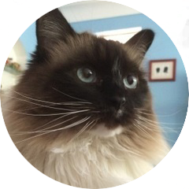

Toggle navigation
Menu
Julien de Castelnau - GIS Portfolio
Home
About Me
GIS Work
Julien de Castelnau's GIS Portfolio
About Me

Definitely not a picture of my cat who is more photogenic than me.
My name is
Julien de Castelnau
, and I am a student at NEIU studying Math and Computer Science.
Read More
GIS Work
This page is dedicated to showcasing the GIS projects I have worked on so far at NEIU.
Read More